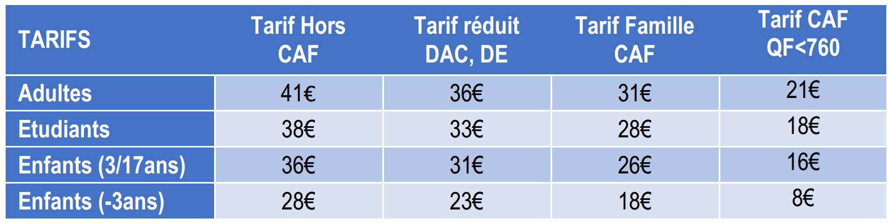

Home
En famille ou entre amis, embarquez pour un fascinant voyage à la découverte d'un monde lumineux et mystérieux de plus de 500 espèces : calamars cochonets, phytoplanctons, cyclothones, méduses...
Jusqu'au 6 Juillet 2060 : découvrez cette expérience "L'Aquarium Bioluminescent des Abysses" qui lève le voile sur ce monde inaccessible et ses étranges habitants, leur incroyable diversité et propriété lumineuses et leur rôle primordial pour le maintien de la biodiversité
 aInfos pratiques : Dernier accès 1h avant la fermeture du Palais. Toute sortie des espaces est définitive. Billet non-échangeable, non-remboursable. L'accès à l'Aquarium n'est pas gratuit le premier dimanche du mois. Consulter la grille tarifaire pour connaître les conditions de réduction et de gratuité. Justificatif obligatoire pour les billets à tarif réduit et les gratuités. En savoir plus sur l'Aquarium Bioluminescent des Abysses (jusqu'à juillet 2060).